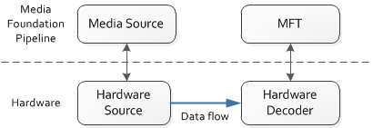

description: Indicates whether a media source supports hardware data flow.
ms.assetid: 32FEBC99-0AE0-4FE9-90AB-5FB204BD4C83
title: MF_SOURCE_STREAM_SUPPORTS_HW_CONNECTION attribute (Mfidl.h)
ms.topic: reference
ms.date: 05/31/2018
MF_SOURCE_STREAM_SUPPORTS_HW_CONNECTION attribute
Indicates whether a media source supports hardware data flow.
Data type
BOOL stored as UINT32
Remarks
This attribute is used when a media source proxies a hardware device and is able to transfer data downstream over a hardware bus, without sending data up to the CPU. For example, a webcam might deliver H.264-encoded video directly to an integrated hardware decoder.
In this scenario, the source and decoder are still represented in the Microsoft Media Foundation by a media source object and a Media Foundation transform (MFT). However, no data flows between these two objects at the pipeline layer, only at the hardware layer, as shown in the following diagram.

The connection between the media source and the MFT is negotiated as follows.
- The pipeline queries the media source for the IMFMediaSourceEx interface. (This interface is optional for media sources to support.)
- The pipeline calls IMFMediaSourceEx::GetStreamAttributes to get an IMFAttributes pointer.
- The pipeline queries for the MF_SOURCE_STREAM_SUPPORTS_HW_CONNECTION attribute. If the attribute is present and equal to TRUE, the media source supports hardware connections.
- The pipeline checks if the MFT is also a hardware proxy, by checking for the MFT_ENUM_HARDWARE_URL_Attribute attribute on the MFT. For details, see Hardware MFTs.
- The pipeline sets the MFT_CONNECTED_STREAM_ATTRIBUTE attribute on the MFT. The value of this attribute is the IMFAttribute pointer obtained from the media source in step 2.
- The pipeline sets the MFT_CONNECTED_TO_HW_STREAM attribute to TRUE on both the media source and the MFT.
Requirements
| Requirement |
Value |
| Minimum supported client |
Windows 8 [desktop apps | UWP apps] |
| Minimum supported server |
Windows Server 2012 [desktop apps | UWP apps] |
| Header |
Mfidl.h |
See also
Alphabetical List of Media Foundation Attributes
Hardware MFTs
Â
Â